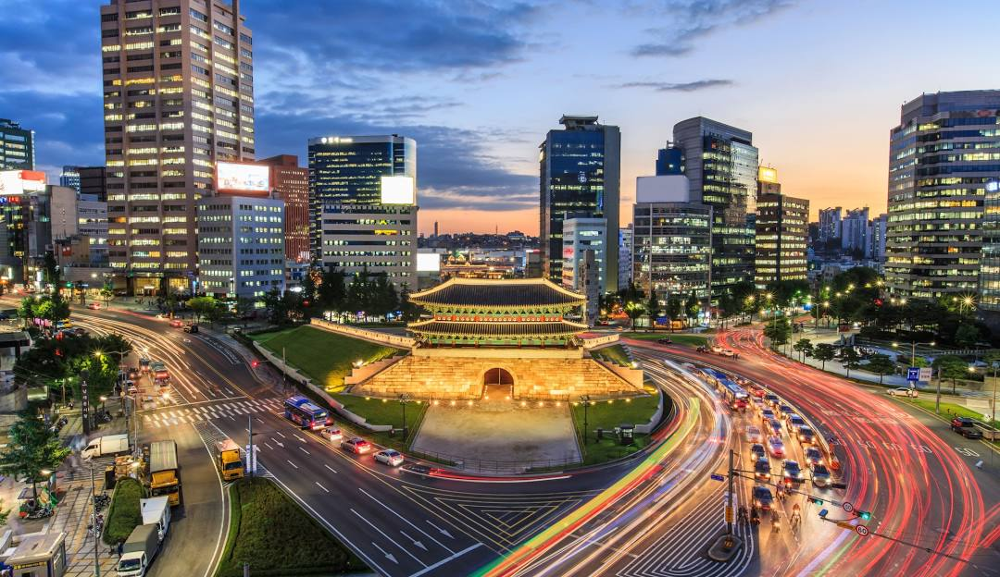

Korea is a region in East Asia. Since 1945, it has been divided at or near the 38th parallel, now known as the Korean Demilitarized Zone.
In 1948, two states declared independence, both claiming sovereignty over all of Korea: South Korea (Republic of Korea) comprising its southern half and North Korea (Democratic People's Republic of Korea) comprising its northern half. The region consists of the Korean Peninsula, Jeju Island, and a number of minor islands near the peninsula. The peninsula is bordered by China (Manchuria) to the north and Russia to the northeast, across the Amnok and Duman rivers. It is separated from Japan to the southeast by the Korea Strait.